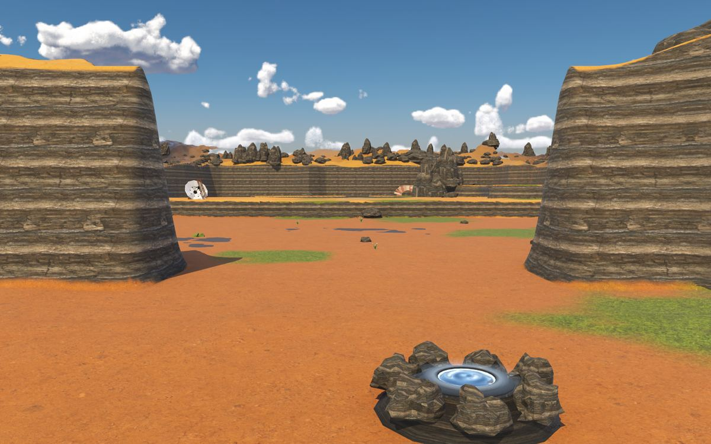
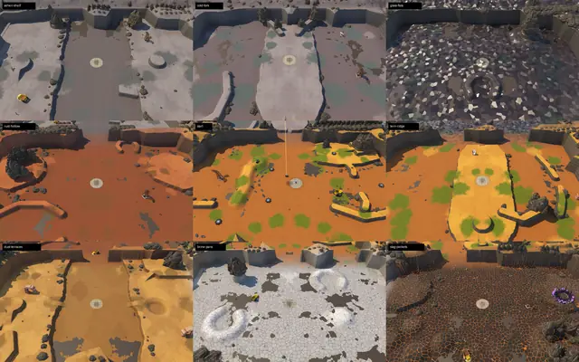
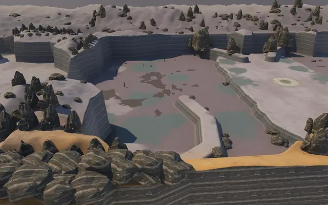
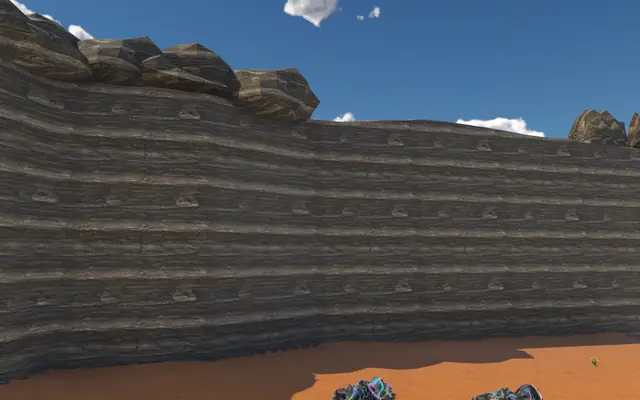
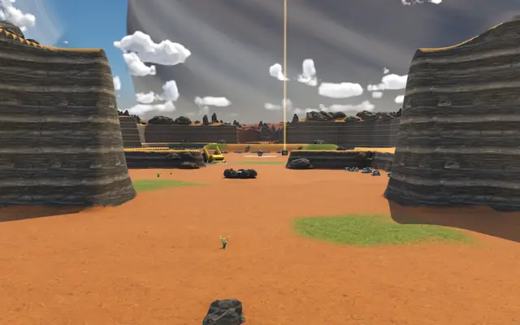
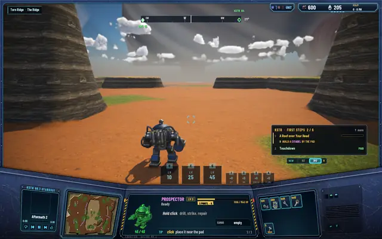
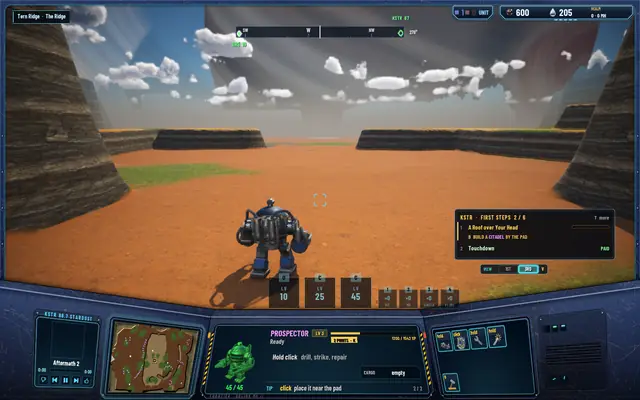
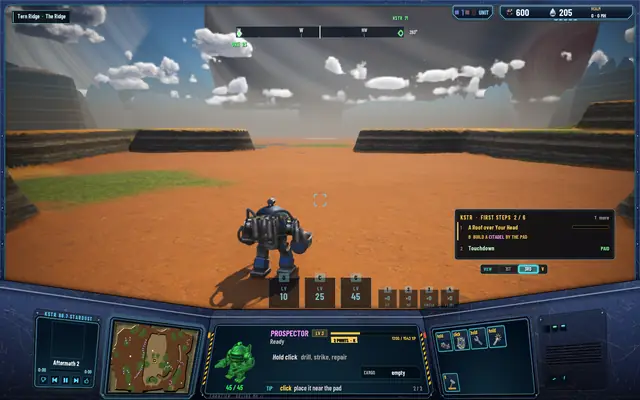
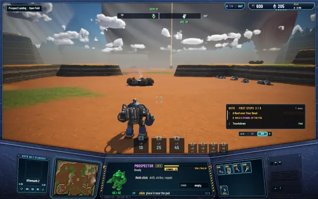
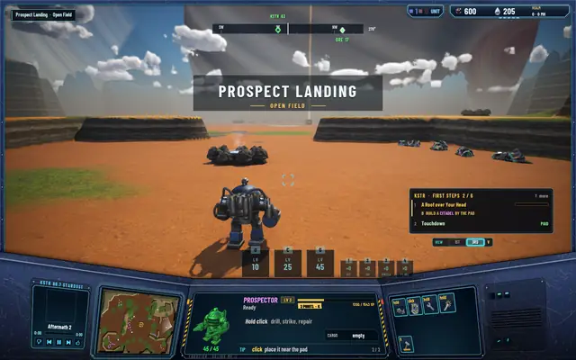

Through the walls: walking between regions
The world is nine regions, each run by the server on its own. Until now you could tell where one stopped: the ground looked the same everywhere, and the edge was a line. Now each region has a ground of its own, walls of cliff around it and passages through them, and you walk from one into the next without anything moving or reloading.

A ground for each region
Arriving somewhere new should look like it. Prospect Landing and Tern Ridge keep the brown dirt. Rust Hollow is rust-red earth with darker iron stains. Brine Pans is pale salt crust in plates, grey brine in the cracks. Ashen Shelf is soft grey ash. Glass Flats is dark glassy ground in facets that catch the sun. Slag Pockets, where the Matriarch nests, is black slag with cracks that glow like embers. Cold Fork has frost on its stone until mid-morning, and Dust Terraces has ochre in bands by height.
The last 16 cells before each edge blend halfway toward the neighbour's ground, so both sides of a border meet in the same colour.
The nine grounds

Top row: Ashen Shelf, Cold Fork, Glass Flats. Middle: Rust Hollow, Prospect Landing, Tern Ridge. Bottom: Dust Terraces, Brine Pans, Slag Pockets.

Walls, and the ways through them
Each region now has a border: the outline of its playable land, with cliff walls rising outside it, rock-strewn on top. Nothing walks on the walls. Fourteen passages cut through them across the world, and each one is laid out on both sides at the same floor height, so the gap you see from one region lines up with the gap on the other.
Walls and passages

Over the wall into a grey-grounded region, its rim strewn with rock.
The wall from the inside.- The passage from Prospect Landing…

…and the same passage from Tern Ridge, with the start's beacon beyond it.


Crossing without a seam
Each region has its own simulation on the server. When a unit walks up to an open edge, the server hands it to the neighbour at exactly the same point. The client keeps one world frame for everything and builds the neighbouring region's ground ahead of you, so at the moment you cross nothing moves, nothing reloads and the camera doesn't jump. The other way to do it, shifting the whole world's origin to the new region, cost 20 to 27 ms a crossing when it was measured, longer than a frame.
Measured on a walk from Tern Ridge into Prospect Landing:
- 13.2 msthe longest frame at the crossing; 13.1 ms is a normal 95th percentile
- 4.63cells a second, the walk before the crossing; 4.55 to 4.95 in each frame round it
- 0.08cells, the camera's largest step
- 0.05cells, the most the walk strayed from its line
Walking through

In Tern Ridge, heading for the passage.
Between the walls.
Through the gap.
Over the edge: now in Prospect Landing.
The region's name is the only sign you crossed.


What isn't right yet
From above, the regions still read as rectangles: their walls follow the cells' edges in long straight runs. A second pass that gives each region an irregular outline is next, and after it the first canyon gets cut into a region for the turrets to hold.
Every test suite passes: 488 core, 233 server and 84 network, and all nine regions validate.